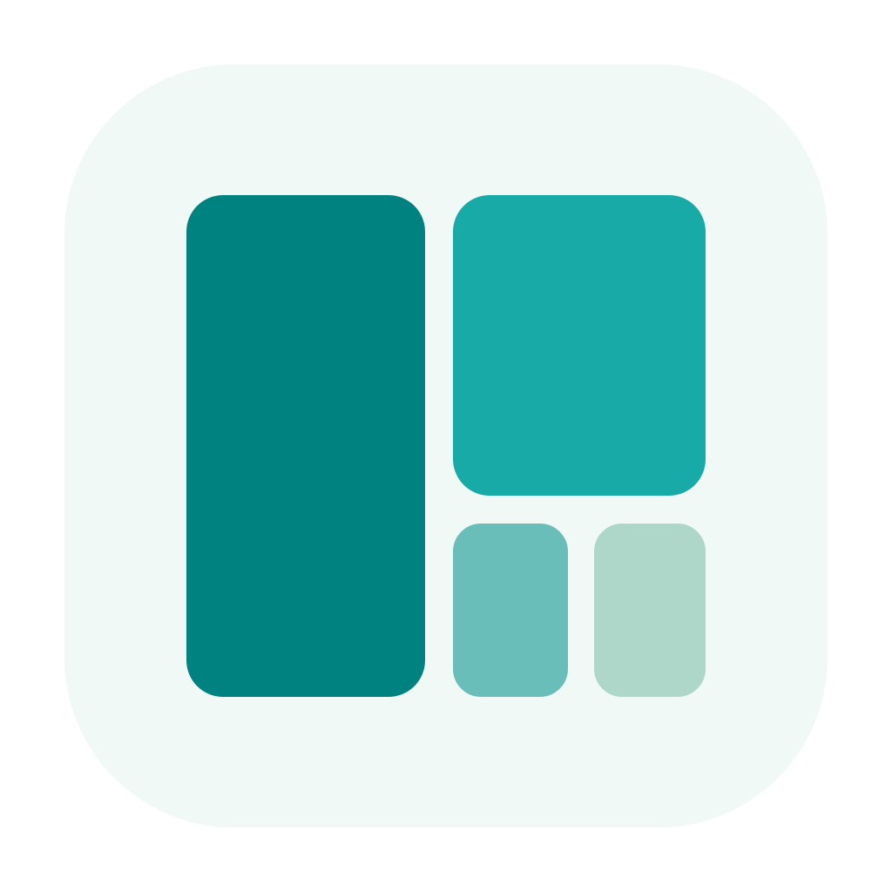
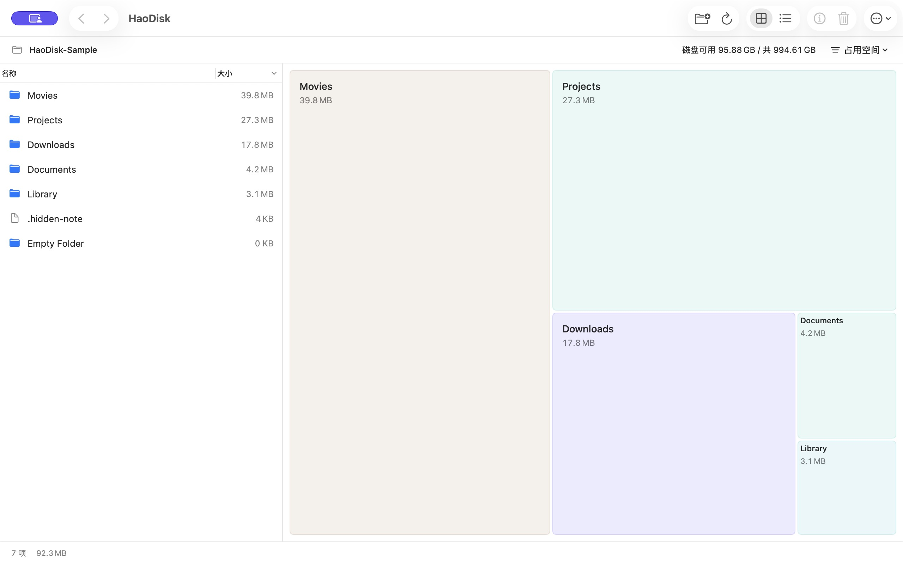

大文件，一眼找到。
方块越大，占用越多。名称与容量直接显示，列表和地图同步选择；双击文件夹，继续看里面有什么。
容量关系示意
HaoDisk为你的 Mac，留一点余地
文件越积越多，整理可以简单一点。
用一张清晰的空间地图，找到大文件，再决定留下什么。
macOS 14 或更新版本 · Apple 芯片与 Intel

少一点猜测，多一点清楚
先看清，再整理。熟悉的 Mac 操作，刚好够用的信息。
方块越大，占用越多。名称与容量直接显示，列表和地图同步选择；双击文件夹，继续看里面有什么。
容量关系示意磁盘可用与总容量常驻顶部。按需切换“占用空间”和“文件大小”，未读完的目录会明确标记。
把不需要的文件或文件夹加入待清理清单，检查后移到废纸篓。清理结果局部更新，继续从原处浏览。
不清空废纸篓；系统与应用资料受保护。HaoDisk 已提交 Mac App Store 审核，敬请期待。
查看开源项目商店上线后，这里将提供下载入口。